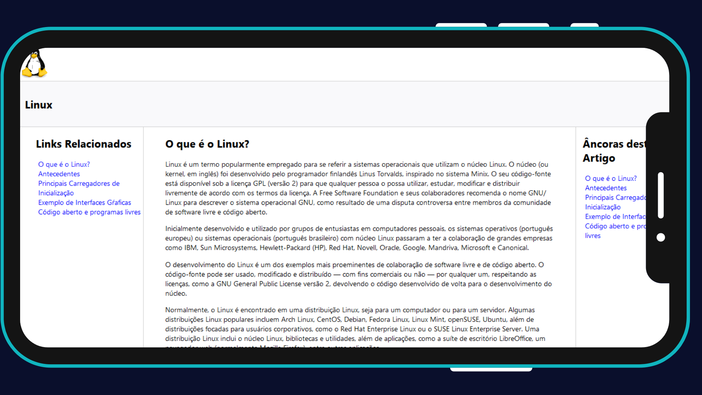

Project Overview
- Este é a resolução do desafio "Recriando o Wikipedia com Layout Moderno" da DIO, basicamente um "clone" da Wikipedia, desenvolvido como parte de um desafio em um curso com o objetivo de aprimorar as habilidades de desenvolvimento HTML.
- O objetivo deste projeto é criar uma "amostra" da interface da Wikipedia para fornecer uma experiência prática de desenvolvimento web. A Wiki do Linux foi escolhida por mim como base devido ao meu carinho, interesse e gosto pelo Linux.